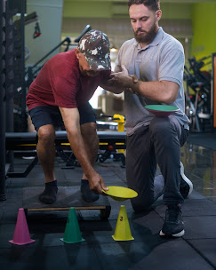
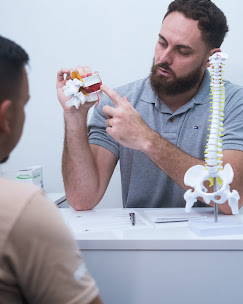
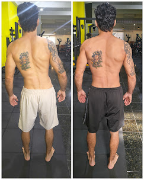

Resultados reais
Pacientes que passaram pelo Dr. José Renato
Conheça alguns dos pacientes que confiaram no meu trabalho e recuperaram sua qualidade de vida.
.jpg)
.jpg)
.jpg)
.jpg)
.jpg)
.jpg)
.jpg)
.jpg)
.jpg)
.jpg)
.jpg)
.jpg)
.jpg)



.jpg)
Dr. José Renato Bittencourt – Fisioterapeuta e Quiropraxista Especialista em fisioterapia esportiva, ortopédica e neurológica. Atendimento humanizado e personalizado para cada paciente, com foco em resultados rápidos e duradouros.
Especialista em fisioterapia esportiva, ortopédica e neurológica. Atendimento humanizado e personalizado para cada paciente, com foco em resultados rápidos e duradouros.
O Dr. José Renato combina conhecimento técnico aprofundado com uma abordagem acolhedora, garantindo que cada paciente se sinta ouvido e cuidado em todas as etapas do tratamento.
Acredito que cada paciente é único e merece um plano de tratamento individualizado, que respeite seu tempo de recuperação e suas necessidades específicas.
Conheça alguns dos pacientes que confiaram no meu trabalho e recuperaram sua qualidade de vida.



Tratamentos personalizados para cada necessidade, sempre com as técnicas mais modernas e eficazes da fisioterapia.
Recuperação segura e orientada após procedimentos cirúrgicos, com progressão gradual focada na restauração completa dos movimentos e funções.
Prevenção e tratamento de lesões esportivas, preparação física e retorno seguro às atividades com performance otimizada.
Tratamento especializado de dores e disfunções musculoesqueléticas: coluna, articulações, músculos e tendões.
Reabilitação pulmonar e cardiovascular para condições respiratórias crônicas e pós-operatório de cirurgias torácicas.
Tratamento para condições neurológicas com foco na melhora da mobilidade, equilíbrio e independência funcional.
Cuidados voltados à terceira idade com foco em equilíbrio, prevenção de quedas e manutenção da autonomia.
Avaliação completa da postura e tratamento de desvios posturais, aliviando dores e prevenindo complicações futuras.
Meu compromisso é oferecer um atendimento que vai além do alívio imediato, construindo uma base sólida para sua saúde.
Antes de qualquer tratamento, realizo uma avaliação completa do seu quadro clínico, histórico e objetivos para entender a causa raiz da sua dor ou limitação.
Desenvolvo um plano de tratamento individualizado combinando as técnicas mais adequadas para o seu caso, com metas claras e prazos definidos.
Acompanho sua evolução de perto, ajustando o plano conforme necessário e orientando sobre hábitos e exercícios que aceleram sua recuperação.
Avaliações reais de quem já confiou no meu trabalho. Nota 5.0 no Google.
"Profissional de ponta, resolve a dor todas as vezes que eu venho. Indico para todos, muito de confiança."
"Melhor quiropraxista da região! Profissional extremamente qualificado, pontual e assertivo. O tratamento tem me ajudado muito com as dores e o bem-estar geral. Nota 10!"
"Excelente profissional! Cheguei até ele com os músculos todo travado, saí de lá leve. Meu dia ficou muito melhor depois que ele tratou os pontos certos."
"Atendimento muito bom, profissional atencioso e cuidadoso. Explica tudo direitinho durante a sessão e tive alívio das dores. Ambiente ótimo e atendimento de qualidade. Recomendo!"
"Profissional excelente. Explica com muito conhecimento e autoridade cada parte do procedimento. Sempre com resultados acima do esperado."
"Excelente profissional, demonstrou muito conhecimento na área gerando conforto imediato. Ótimo, muito atencioso e em uma clínica muito agradável e completa."
Cada sessão tem duração média de 50 minutos a 1 hora, tempo necessário para uma avaliação e aplicação das técnicas adequadas ao seu caso.
O consultório está localizado na Av. Nesralla Rubez, 197 - Centro, Cruzeiro - SP, com fácil acesso e estacionamento próximo.
Trabalhamos com atendimento particular para garantir a qualidade e dedicação exclusiva em cada sessão. Fornecemos recibo para reembolso junto ao seu convênio.
Utilizo técnicas de fisioterapia manual, quiropraxia, terapia por exercícios, eletroterapia, dry needling e outras abordagens integradas de acordo com a necessidade de cada paciente.
Av. Nesralla Rubez, 197 - Centro
Cruzeiro - SP
Segunda à Sexta
08h às 18h